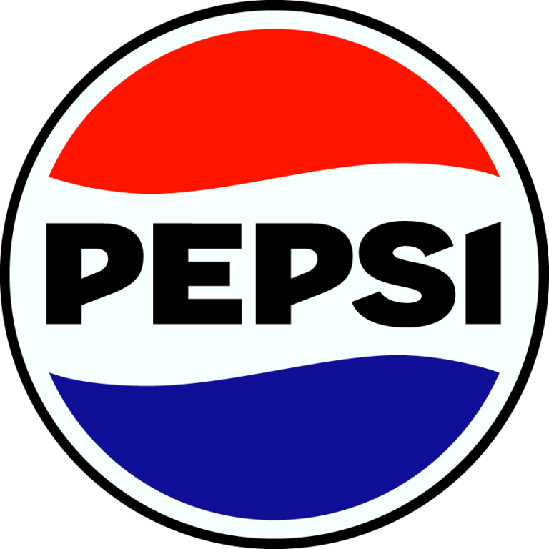

PepsiCo Sustainability Calculator 
Positive Agriculture
Regenerative agriculture (acres):
Sustainably sourced (%):
Water Consumption (Gallons):
Energy efficiency (kWh per unit):
% of renewable energy used:
Pesticide usage (lbs):
Positive Value Chain
% of packaging that ends up recycled:
% of package made from recyclable material:
Carbon emissions (metric tonnes):
Positive Choices
Positive Choices (0-100%):
Calculate Sustainability